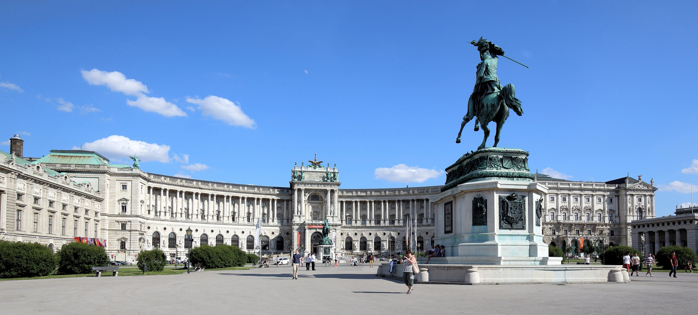
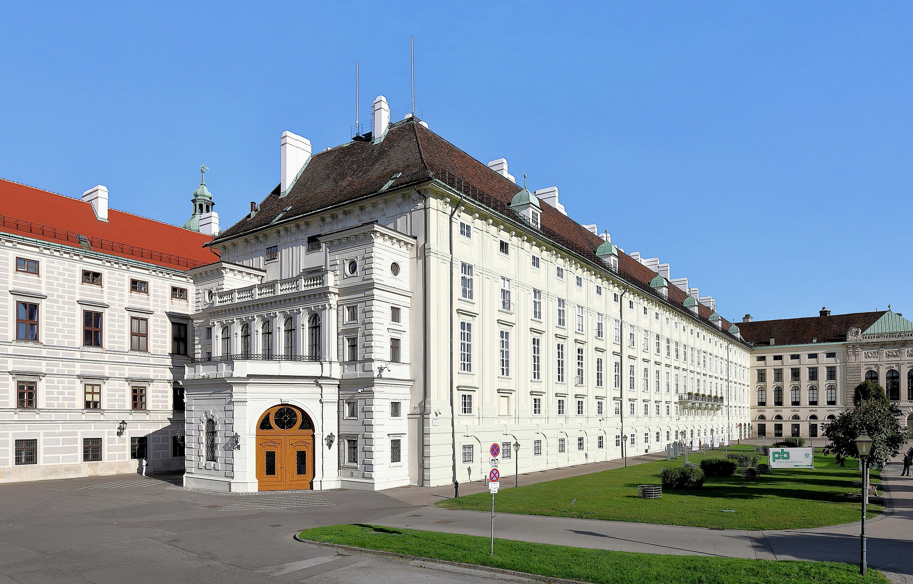

The
Hofburg was the imperial palace of the
Hapsburg Empire. It was built in the 13th century and is located in the center of Vienna. In 1946, it became the
official workplace and residence of Austria's president.
History
The palace was originally constructed during the Middle Ages. Since the 13th century, it has undergone
many expansions. As the Hapsburg Empire increased in power, the Hofburg grew in size. Today it is the seat
of the head of state.